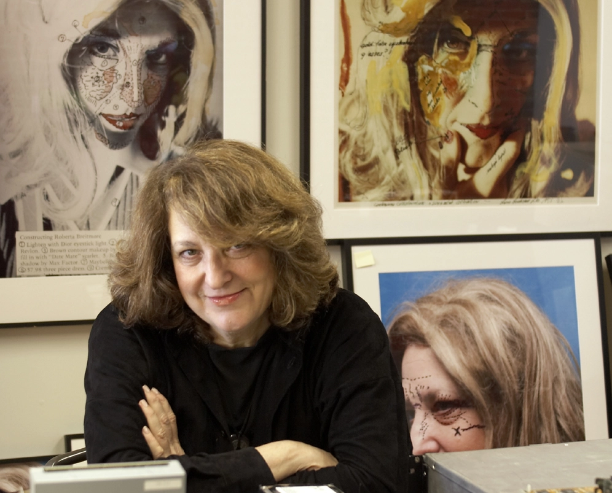

Lynn Hershman is currently 86 years old.
She became well known in the 1960s when technology was not too well
known.
Hershman knew she wanted to become further involved in modern technology
and advance the art she was currently making.
Lynn became famous for various acclaimed art and film works,
specializing in the relationship between humans and technology.

Home